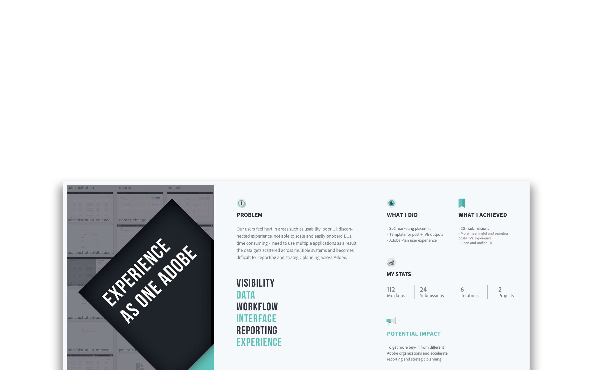
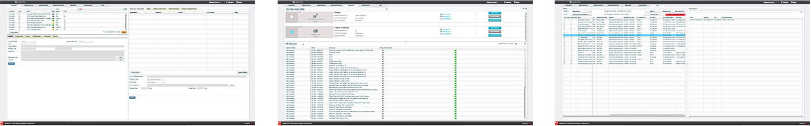
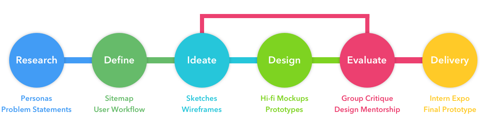
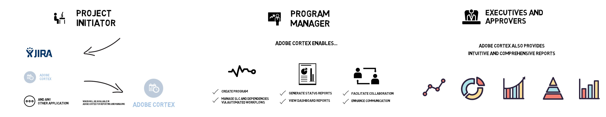
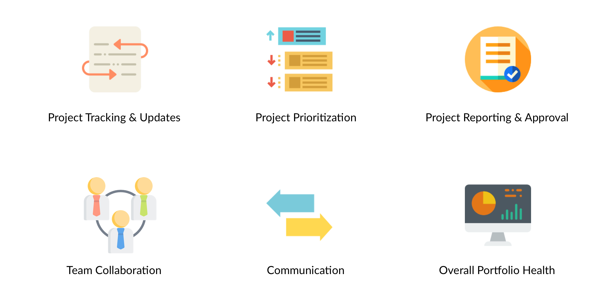
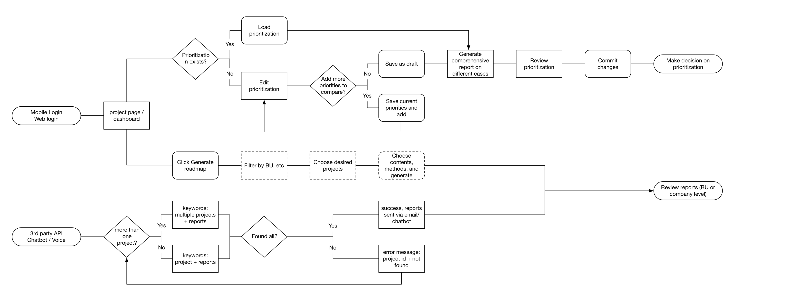
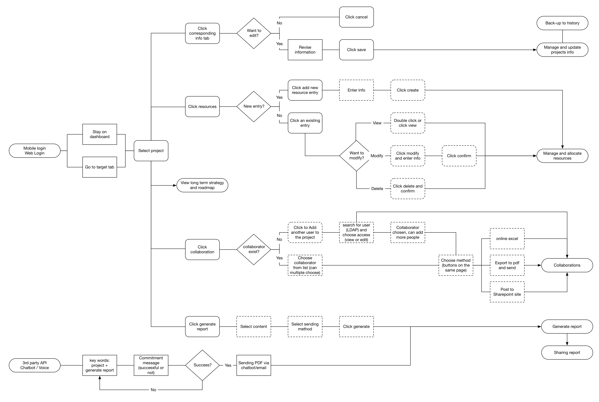
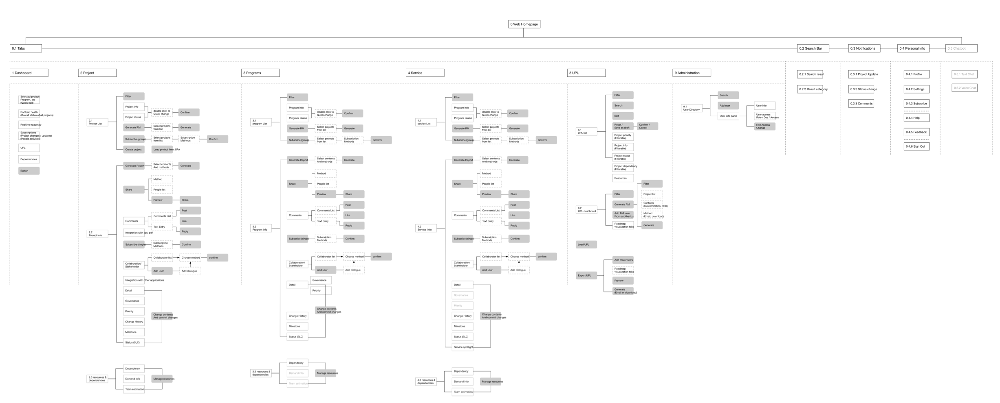
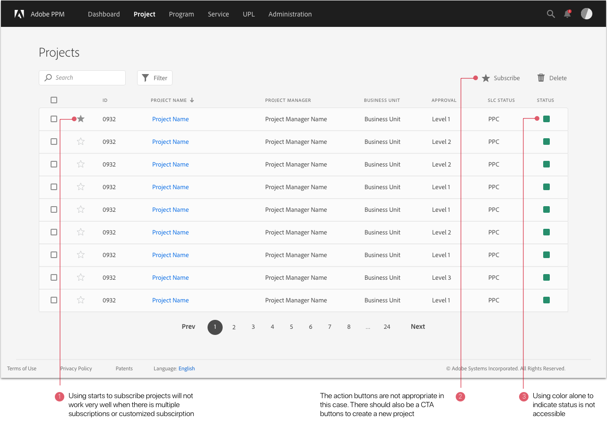
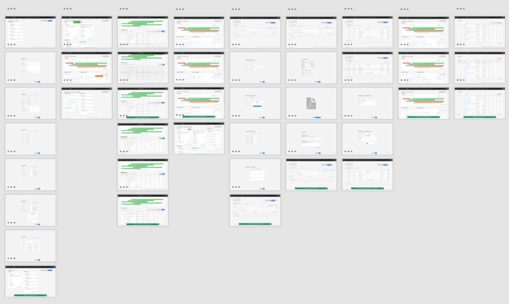

Experience as One Adobe - Accelerating Reporting & Strategic Planning
Experience Design Internship
UX Designer
Sole Designer
In summer 2017, I interned at Adobe's headquater in San Jose, California as a UX Designer on the Business Operations & Planning team.
I was working on the product design of Adobe PPM 2.0 (Project Portfolio Management) where everyone at Adobe can access projects, align with corporate strategy, manage portfolio, and work as One Adobe.
In the 12 weeks, I worked with PMs, software engineers, and design mentors to create seamless and meaningful user experience to accelerate the reporting and strategic planning across Adobe.
* Due to NDA, I only showcase my design process and several mock-ups that contain no confidential information on this page.
If you want to know more about the details, you can access the design at Adobe Wiki (Internal Access Only) or shoot me an email.
The Adobe PPM (Project Portfolio Management) 1.0 was built several years ago upon several different applications. Adobe has evolved a lot since then, making most of the functionalities in Adobe PPM 1.0 redundant and outdated. The UI looks like from 1990s and the backend data fetching is slow. Different BUs are using different project management tools and people often need to jump back and forth to oversee projects.
Outdated UI of Adobe PPM 1.0
This is why Adobe PPM 2.0 is brought up by our team to accelerate the process and help Adobe employees manage projects and align with company strategy. Our team is also hoping that Adobe PPM 2.0 can become the 'single source of truth' at Adobe to help Adobe win in the marketplace.
As the only designer on the team, I worked closely with PMs to dig user needs and define the 2.0. I also met with my design mentor every week to critique and iterate the design.
My team has conducted extensive competitive analysis and user research such as surveys and interviews before my internship. So my primary research task focused on synthesizing the research data and distilling key insights.
The primary users of Adobe PPM 2.0 will be the product managers, program managers, and vice presidents at Adobe. In order to illustrate our users and their goals, I created three primary personas and identified their needs by analyzing the previous user research such as surveys and interviews.
Use Cases
After analyzing surveys, interview data, and conducting heuristic evaluation on current application, I worked with the product manager and my team to identify the key issues of Adobe PPM 1.0:
Based on the personas, use cases, and key issues, my team and I identified the key features that are important in the new PPM (icon credit to Smashicons).
Based on the different tasks of each persona, I built the user workflow to demonstrate how they will use Adobe PPM 2.0 to achieve their goals.
Workflow for Executives
Workflow for Project Managers
I also constructed the sitemap (information architecture) by analyzing the existing architecture and future vision. The new PPM will keep only the essential functions and be accessible on both web and mobile(not in scope).
Adobe PPM 2.0 Sitemap
The Adobe PPM 2.0 consists of an all new dashboard, project management, portfolio prioritization, reporting, and admistration functionalities. As there are three different personas using this platform, I designed different interactions and pages for these scenarios.
Users can initiate a project in PPM or load an existing project elsewhere.
With the automated workflow, the system guides users to prioritize portfolio step by step before it is sent for approval.
With the new dashboard, managers can update a project regularly and send update.
As the only designer in the team, I worked through 6 rounds of design iterations to get to the final mockups and prototype. Adobe PPM 2.0 covers the primary functions of reporting, project recording, strategy alignment, portfolio management. It also provides an intuitive dashboard which presents the key information and project changes, as well as smart notifications that help simplify the workflow.
Challenge
Redesign the application architecture and fit the information in a modern and intuitive user interface.
Solution
Starting from "scratch", I distilled the most important information sections and rephrased them in to different pods that enable flexibility on different platforms and screen sizes.
I also designed a dashboard that consists of succinct data from different tabs.
To improve the UI style and create a sense of 'familiarity', I followed the Adobe internal design guidelines.
Dashboard Design - 1st Iteration
Key Takeaways
Challenge
Design clean and intuitive tables.
Solution
However, the information presentation in iteration 1 is still to overwhelming and patterns used are not consistent.
So the second iteration focused on understanding what is really important to users and only keep the relevant data on the dashboard and front page.
In addition, I also explored the interaction patterns used in table design such as 'drawers', 'modal screen', and 'breadcrums'.
Table Pattern Design - Breadcrum, Drawer, Modal Screen
Table Design for Project Page
Key Takeaways
Challenge
Create forms that are easy to edit and catch the key information.
Solution
I iterated through different layout by experimenting with margins, font size, paddings, and button positions.
In addition, I also learnt how to choose button styles more wisely (e.g. using CTA buttons only once for proceeding to next steps, group action buttons together as a toolbar).
Editing Project Information
Key Takeaways
Challenge
Redesign the tables to make them functional.
Solution
After sharing my design with my team and potential users, I got valuable feedback on how users would normally use the data.
In this iteration, I looked at tables again to explore the four key aspects:
Design for Filter and Filter State
Key Takeaways
Challenge
Make the design hi-fi!
Solution
In this iteration, I refined the icon styles, unified margins/paddings, adjusted color palette to create pixel-perfect hi-fidelity mockups.
I also created a working prototype to help my team present the new solution to stakeholders.
Hi-fidelity Design
Hi-fidelity Mockups
Key Takeaways
Challenge
Design interactions within and between personas.
Solution
I also re-examined the 'automated workflow' and adjusted the interface for different personas.
I created a user workflow cycle engaging all three primary personas and bridged the gap between them by designing micro-interactions like useful feedback and smart notifications.
Automated Workflow of Three Personas
Key Takeaways
Finally, I designed the interactions between different screens and workflow and created a final prototype.
I designed more than 100 mockups and two prototypes. My team will use my design as demonstration for the new solution to get more buy-in from different BUs across Adobe.
I worked with the HIVE (a one-day meeting that accelerates decision-making) team to improve the post-HIVE experience. I conducted research and made a prototype for capturing the meeting outputs. And the team adopted my prototype!
I helped my team to design a placemat with contest to market the management framework and new solution to more Adobe employees. We received more than 20 submissions in two weeks!